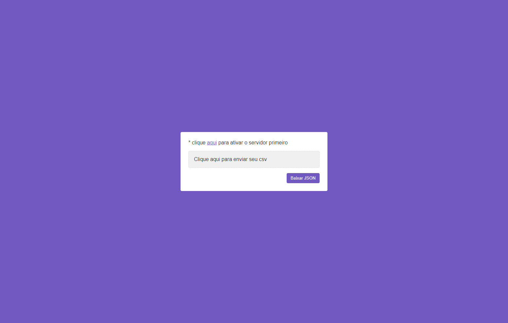

CsvToJson
CsvToJson é uma aplicação full stack construída com NodeJS, Typescript e Express (backend) + React e Axios (frontend) que recebe um arquivo CSV, transforma para JSON e disponibiliza o mesmo para download.

CsvToJson é uma aplicação full stack construída com NodeJS, Typescript e Express (backend) + React e Axios (frontend) que recebe um arquivo CSV, transforma para JSON e disponibiliza o mesmo para download.